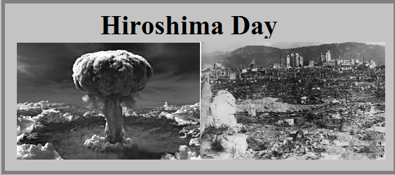
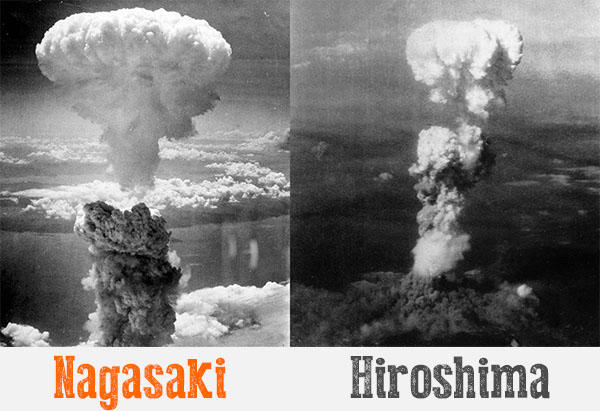

- Many of the ethical and moral issues brought up by the use of nuclear weapons have been discussed since the 1945 atomic bombings of Hiroshima and Nagasaki. The enormous damage and loss of life brought on by their use in combat is one of the main worries. Over 200,000 people, mostly civilians, perished in the 1945 atomic bombings of Hiroshima and Nagasaki, and survivors experienced long-lasting health effects. Radioactive materials that can harm people and the environment for years or even decades after a detonation can be released as a result of the use of nuclear weapons. These consequences are not only short-term but also long-term, and future generations may be harmed as a result.
- The ongoing danger that nuclear weapons and the potential for nuclear war pose to humanity is another ethical and moral concern. The use of nuclear weapons could result in a massive nuclear conflict that would kill millions of people and harm the environment for a very long time. It is important to consider the long-term effects on the environment, society, and economy in addition to the immediate death and destruction.
- Another significant ethical and moral concern is the spread of nuclear weapons to other nations. The proliferation of nuclear weapons can raise the possibility of nuclear conflict and spark an arms race between countries. This may destabilize international relations and raise the possibility of nuclear war.
- Major ethical and moral concerns also surround the spread of nuclear weapons to other nations. The proliferation of nuclear weapons raises the possibility of nuclear conflict and fuels international arms competition. The risk of nuclear war may rise as a result, damaging international relations.
- Governments and scientists alike have a moral obligation to weigh the implications of their work and work to lower the risks posed by nuclear weapons. They owe it to the public to be open about the research, development, and use of nuclear weapons and to take precautions to prevent harm from being inflicted unnecessarily. The use of such devastating weapons raises questions about "just war" and the ethics of using such weapons in general. This leaves you with the question, are using nuclear weapons really worth it? I'll let you think about that yourself.

